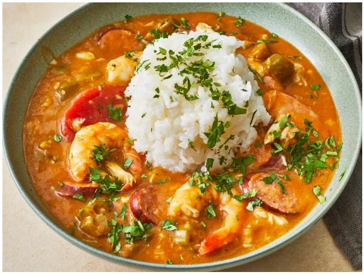

New Orleans Creole Gumbo

Description
New Orleans-style gumbo is a true taste of Southern tradition. This boldly flavored stew is bursting with fresh, filling ingredients like bell pepper, sausage, stewed tomatoes, and crabmeat. Hot sauce ad Cajun seasonings add a kick that makes this Lousiana dish a favorite amongst our community of home cooks.
Ingredients
- 1 cup all-purpose flour
- ¾ cup bacon drippings
- 1 cup coarsely chopped celery
- 1 large onion, coarsely chopped
- 1 large green bell pepper, coarsely chopped
- 2 cloves garlic, minced
- 1 pound andouille sausage, sliced
- 3 quarts water
- 6 cubes beef bouillon
- 1 tablespoon white sugar
- salt to taste
- 2 tablespoons hot pepper sauce (such as Tabasco®), or to taste
- ½ teaspoon Cajun seasoning blend (such as Tony Chachere's®), or to taste
- 4 bay leaves
- ½ teaspoon dried thyme leaves
- 1 (14.5 ounce) can stewed tomatoes
- 1 (6 ounce) can tomato sauce
- 4 teaspoons file powder, divided
- 2 tablespoons bacon drippings
- 2 (10 ounce) packages frozen cut okra, thawed
- 2 tablespoons distilled white vinegar
- 1 pound lump crabmeat
- 3 pounds uncooked medium shrimp, peeled and deveined
- 2 tablespoons Worcestershire sauce
Directions
- Gather all ingredients.
- Make the roux: Whisk together flour and 3/4 cup bacon drippings in a large, heavy saucepan over medium-low heat until smooth. Cook roux, whisking constantly, until it turns a rich mahogany brown color. This can take 20 to 30 minutes; watch heat carefully and whisk constantly or roux will burn. Remove from heat; continue whisking until mixture stops cooking.
- Make the gumbo: Place celery, onion, green bell pepper, and garlic into the work bowl of a food processor, and pulse until all vegetables are very finely chopped.
- Stir vegetables into the roux, and mix in sausage. Bring mixture to a simmer over medium-low heat, and cook until vegetables are tender, 10 to 15 minutes. Remove from heat and set aside.
- Combine water and beef bouillon cubes in a large Dutch oven or soup pot and bring to a boil over medium-high heat. Stir until bouillon cubes dissolve, then whisk roux mixture into the boiling water.
- Reduce heat to a simmer and mix in sugar, salt, hot pepper sauce, Cajun seasoning, bay leaves, thyme, stewed tomatoes, and tomato sauce. Simmer soup over low heat for 1 hour; mix in 2 teaspoons of file gumbo powder at the 45-minute mark.
- Meanwhile, melt 2 tablespoons bacon drippings in a skillet over medium heat. Add okra and vinegar and cook for 15 minutes; remove okra with a slotted spoon, and stir into the simmering gumbo.
- Mix in crabmeat, shrimp, and Worcestershire sauce, and simmer until flavors have blended, 45 more minutes. Stir in 2 more teaspoons of file gumbo powder just before serving.
- Serve hot and enjoy!